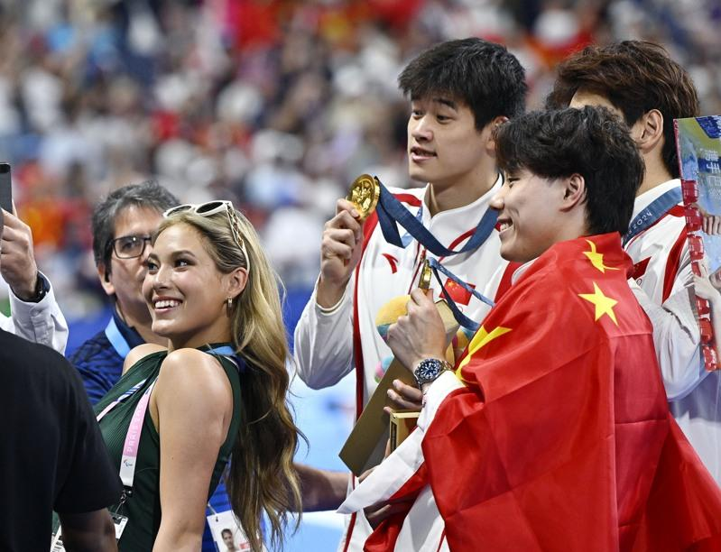

近几日，在巴黎街头和奥运会场，一个熟悉的身影，跑步辗转于各个比赛现场，闪现在观众席或赛后发布会，总是亲切地与身边人打招呼……那就是北京冬奥会自由式滑雪冠军谷爱凌。
「我看了很多比赛，可能每天三四场，学习新的项目，体验不同的运动。尤其是作为冬季项目选手，很开心能看到夏季项目中运动员的训练和赛前准备，都很有趣。」当地时间8月4日，谷爱凌接受中新社视频连接专访时说：「看到这些比赛我感到非常骄傲，能为中国健儿们加油也是我的荣幸。」
女子双人10米跳台和男女混双4×100米比赛赛后，谷爱凌为中国运动员们的精彩表现点赞，「非常开心看到全红婵、陈芋汐拿下这块金牌。同时，我也看到中国游泳队打破了亚洲纪录。我和我的朋友张雨霏打了招呼。她们游泳真的太棒了。」
跟运动员们「梦幻联动」之余，谷爱凌还将在当地时间8月10日踏上马拉松的赛场，挑战个人运动生涯中首个全马比赛。
「我现在已经习惯了从一个项目‘跑’到下一个项目。」由于每天要观看多场比赛，兼顾备战大众组马拉松比赛，谷爱凌和妈妈，一个跑步，一个骑车，辗转不同的赛事现场。「到了现场，我全身都是汗，大家以为我是准备来比赛的运动员。我想这也是一种奥运精神的体现。」
据了解，大众组马拉松比赛将在与奥运会马拉松比赛相同的赛道上举行。这是奥运会历史上首次设置大众组马拉松比赛。最终将有4万余名跑者从巴黎市政厅起跑。
面对全程42.195公里的马拉松路线，谷爱凌最近三周正积极备战，表示将尽最大努力跑完全程。「没想到要在三个礼拜的准备下跑马拉松，滑雪和跑步是相通的，都需要奥运精神、运动精神。」谷爱凌说。
本届巴黎奥运会赛场上，如小轮车、霹雳舞及滑板等小众运动项目引起不小关注。谷爱凌曾在滑板女子街式赛决赛现场，为取得历史性好成绩的14岁中国小将崔宸曦加油助威。她还透露，将在当地时间8月9日与国际奥委会主席托马斯·巴赫（Thomas Bach）相约一起观看「舞林高手」云集的霹雳舞女子决赛。
「自由式滑雪能够表达自己的风格，在霹雳舞和滑板中，也同样能看到个人风格的展现和每位运动员自己的范儿。」谷爱凌说。
巴黎奥运热话题
- 麟洋配赛后大合照 李洋「1句话」逗笑马来西亚选手
- 与约克维奇打到抢7落败 阿尔卡拉斯：我有过机会
- 30岁生日礼物 中国刘洋夺金 想吃三鲜馅饺子
- 中国男子混泳接力摘金 打破美60年不败纪录
- 选手村太热没冷气 意大利金牌索性去公园睡觉